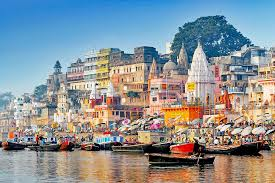

The Pink City
Jaipur, known as the "Pink City" for its distinctive architecture

Rajasthan
Udaipur, the "City of Lakes," famous for its romantic ambiance and picturesque lakes and palaces

varanasi
Varanasi, one of the oldest continuously inhabited cities